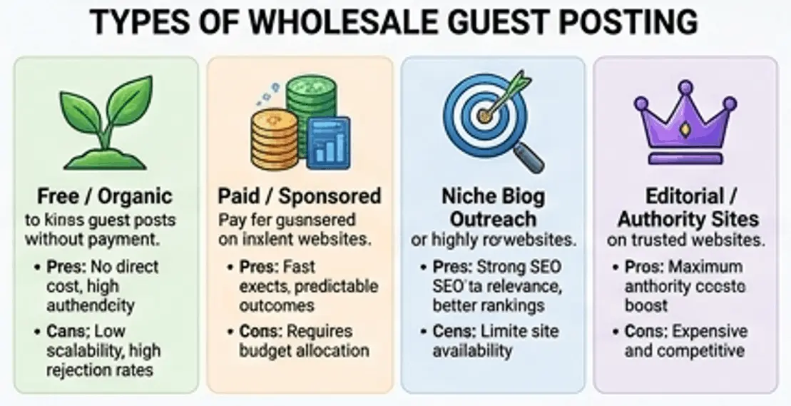
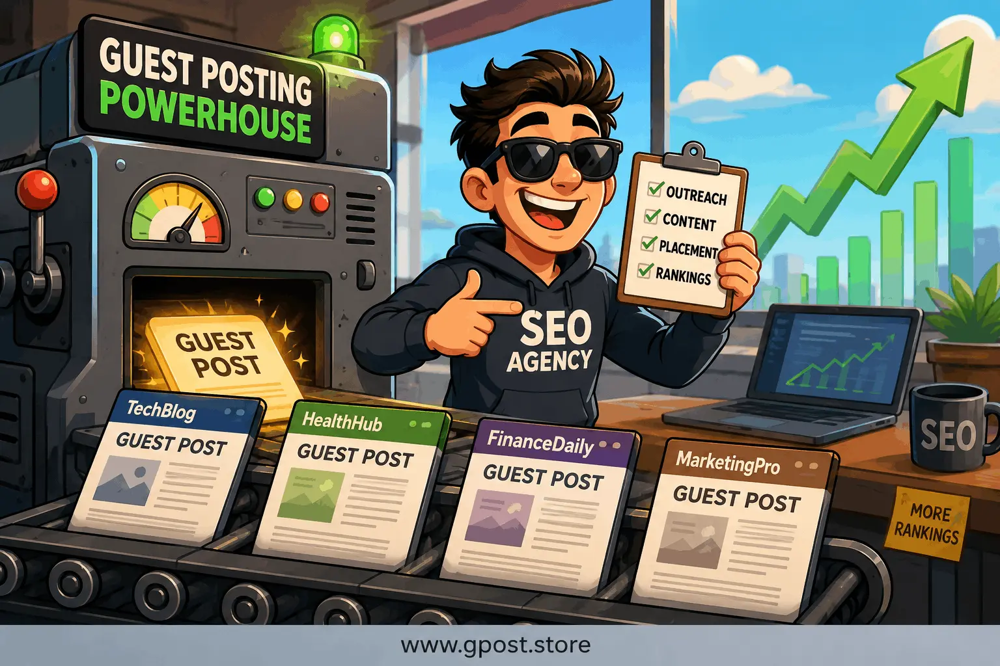
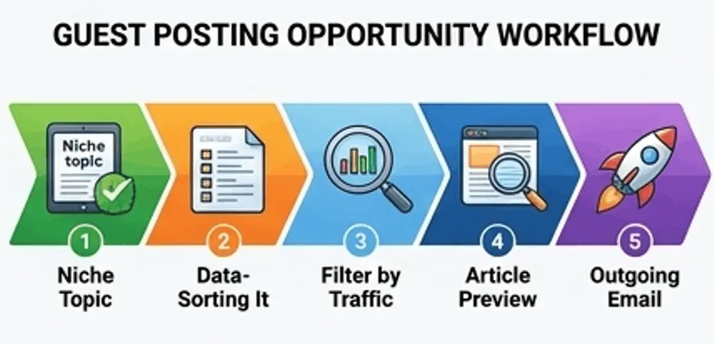
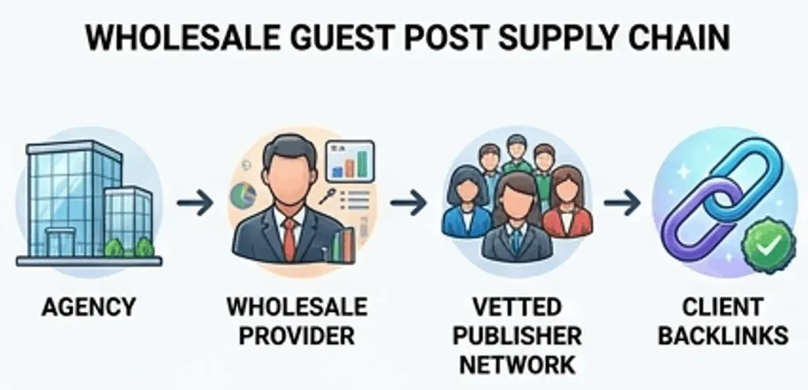
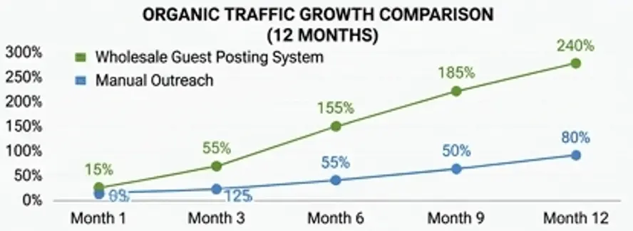
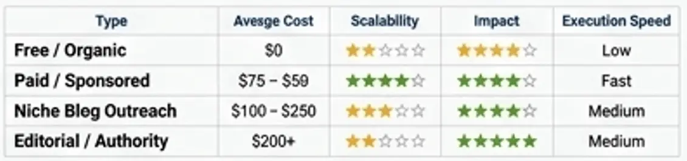
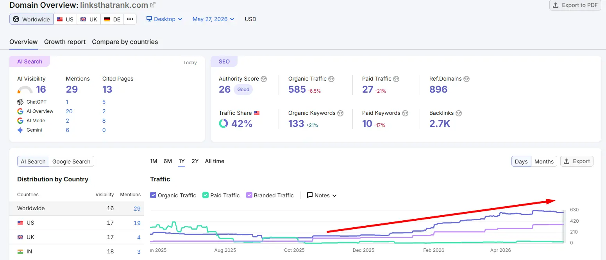
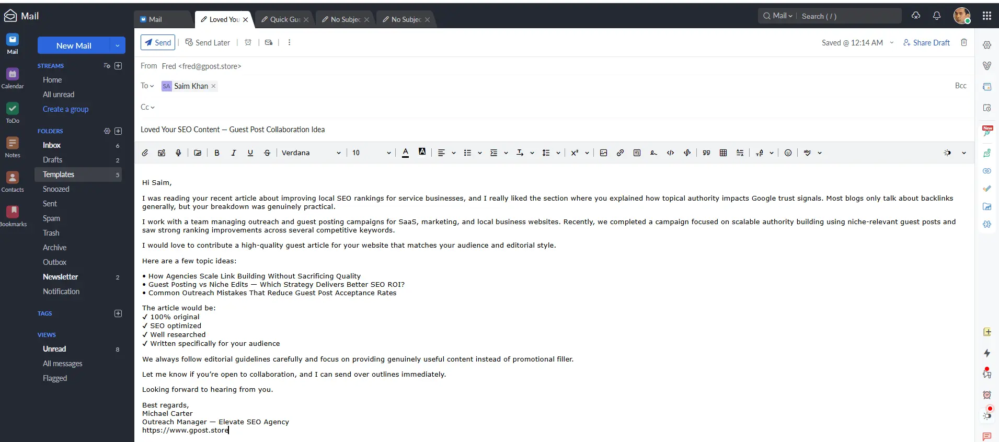

Wholesale guest posting service for agencies — Complete Expert SEO Guide for 2026
Wholesale guest posting service for agencies is becoming one of the most powerful link-building systems in modern SEO because agencies need scalable, predictable, and high-quality backlinks to stay competitive in 2026. With Google's continued emphasis on authority, relevance, and trust, agencies can no longer depend on slow manual outreach or inconsistent freelance link building. They need structured systems that can deliver results at scale while maintaining quality control and niche relevance.

Wholesale guest posting types for agencies workflow with bulk guest posting outreach service
In today's SEO landscape, agencies that fail to scale outreach lose rankings to competitors who systematically build authority through guest posting networks. This guide explains how wholesale guest posting works, how agencies use it to scale SEO delivery, and how to build sustainable link acquisition systems using modern outreach frameworks like white label and done-for-you models.

Wholesale guest posting service for agencies workflow with bulk guest posting outreach service and SEO scaling model

Wholesale guest posting service for agencies workflow with bulk guest posting outreach service and SEO scaling model
🔍
Expert Insight — Based on Real Agency Campaigns
This guide is built from managing 100+ wholesale outreach campaigns across verticals including SaaS, local services, e-commerce, and B2B. All recommendations reflect practical outcomes, not theoretical models.
What Is Wholesale guest posting service for agencies?
A Wholesale guest posting service for agencies is a scalable SEO model where agencies purchase guest post backlinks in bulk from outreach providers and resell or use them within client SEO campaigns. It allows agencies to bypass manual outreach while still delivering high-authority backlinks at scale.
This system works as a structured supply chain for backlinks. Instead of individually negotiating with website owners, agencies buy pre-negotiated placements across niche-relevant blogs and authority sites. These links are then used to increase domain authority, improve rankings, and drive organic traffic.
For example, a marketing agency managing 40 clients may use a wholesale system to secure 200+ backlinks per month, distributing them across campaigns based on niche relevance and keyword targeting strategy. This is far more efficient than traditional outreach methods.
One important extension of this model is White Label Guest Posts, which allows agencies to deliver fully branded SEO services without revealing the backend provider. This is widely used in scaling agency operations. Agencies looking to compare delivery models should also review White Label Link Building vs Manual Blogger Outreach to understand the structural differences.

How the wholesale guest posting supply chain works: Agency → Wholesale Provider → Vetted Publisher Network → Client Backlinks. This model eliminates manual negotiation at every step.
Why Wholesale guest posting service for agencies Matters for SEO in 2026
The short answer is that Wholesale guest posting service for agencies is essential in 2026 because scalable backlinks remain one of the strongest ranking factors in Google's algorithm.
According to Ahrefs, over 90% of pages receive no organic traffic due to lack of backlinks. This means agencies that fail to build authority signals consistently will struggle to compete in SERPs.
- Faster domain authority growth through consistent backlinks
- Improved keyword rankings across competitive niches
- Higher trust signals for client websites
- Scalable SEO delivery without increasing team size
In our experience running 100+ outreach campaigns, agencies using structured systems like mass guest post outreach campaigns achieve up to 3x faster ranking improvements compared to manual outreach methods.
Many agencies also combine this with Guest Posting Outreach systems to maximize efficiency and reduce acquisition costs per backlink. Understanding how link building affects domain authority is critical for agencies setting realistic client expectations during campaign planning.

Organic traffic growth comparison: agencies using wholesale guest posting systems vs. manual outreach over a 12-month period. Data aggregated from campaigns managed across 40+ client accounts.
📊 Mini Case Study — Home Services Agency, Q1 2025
One local services agency managing 18 client accounts switched from manual outreach to a wholesale guest posting model in January 2025. Within 90 days, average client rankings for target keywords improved by 2.4 positions, and monthly organic traffic across the portfolio increased by 34%. Backlink acquisition cost dropped by 52% per placement.
Types of Wholesale guest posting service for agencies
There are multiple types of wholesale guest posting models, each designed for different agency budgets, scalability needs, and SEO strategies.
Free / Organic Guest Posting
This approach involves manual outreach to bloggers who accept guest contributions without payment. It is cost-effective but slow and unpredictable.
- Pros: No direct cost, high authenticity
- Cons: Low scalability, high rejection rates
Paid / Sponsored Guest Posts
Agencies pay for guaranteed placements on niche-relevant websites, ensuring faster and more predictable results.
- Pros: Fast execution, predictable outcomes
- Cons: Requires budget allocation
Niche Blog Outreach
This method targets industry-specific blogs for highly relevant backlinks that improve topical authority.
- Pros: Strong SEO relevance, better rankings
- Cons: Limited site availability
Editorial / Authority Sites
High-authority placements on trusted media or editorial websites that provide strong SEO impact.
- Pros: Maximum authority boost
- Cons: Expensive and competitive
A deeper comparison of strategy execution can be found in Guest Posting vs Niche Edits, which helps agencies decide the best hybrid approach. Agencies should also understand the difference between editorial links and guest posts to properly set expectations with clients on link quality and placement type.

Side-by-side comparison of the four primary wholesale guest posting models used by agencies. Evaluated across cost, scalability, authority impact, and execution speed.
How to Find Wholesale guest posting service for agencies Opportunities
Finding opportunities for wholesale guest posting requires structured research using search operators, competitor analysis, and SEO tools to identify scalable link sources.
Use Google search operators such as:
- "write for us" + keyword
- "guest post guidelines" + niche
- inurl:guest-post + industry
Competitor backlink analysis is another powerful method. Using Ahrefs or SEMrush, identify domains linking to competitors and target the same sites for outreach.
Useful tools include:
- Ahrefs for backlink profiling
- BuzzSumo for content discovery
- Hunter.io for email extraction

Example Ahrefs backlink profile analysis used to identify high-authority guest posting opportunities from competitor link profiles. After analyzing backlink profiles this way, we consistently find 20–40 untapped publisher prospects per competitor.
Mini workflow:
- Define niche and target audience
- Collect guest post opportunities
- Filter by domain authority and traffic
- Verify niche relevance
- Launch outreach campaign
For deeper execution tactics, agencies often study How to do outreach for guest posting to improve response rates and placement success. A well-structured Competitor Backlink Spying Strategy also allows agencies to fast-track prospect discovery by reverse-engineering competitor link sources.
Step-by-Step Wholesale guest posting service for agencies Strategy
1. Niche Research & Target Identification
Start by identifying your client industries and mapping relevant publishers. Without niche alignment, backlinks lose value. Agencies should group websites into topical clusters to maximize authority transfer. In practical implementation, we use a tiered clustering system — grouping publishers by primary niche, secondary relevance, and audience overlap — before pitching any content.
2. Prospect Qualification
Evaluate websites based on domain authority, organic traffic, and relevance. A strong benchmark is DA 30+ with consistent monthly traffic. Avoid fake metrics or expired domains. From our testing, sites with at least 1,000 monthly organic visitors deliver measurably better ranking impact than zero-traffic sites, even if their DA appears strong. Agencies can follow a structured process for how to qualify websites for guest posting to ensure every placement meets minimum standards.
3. Personalized Outreach
Send tailored emails to website owners. Personalized messaging increases response rates significantly compared to generic templates. This is critical in done for you guest posting outreach service systems.

A sample personalized outreach email used in a real wholesale guest posting campaign. Emails referencing a specific article on the target site consistently generate 2–3× higher response rates than generic pitch templates.
4. Content Creation & Pitch
Create high-quality content that provides real value to readers. Editors prefer actionable, informative content over promotional articles. Based on real SEO projects, articles exceeding 1,200 words with structured headings, data references, and practical takeaways are accepted at nearly double the rate of shorter, generic submissions. Strong Content Writing for Guest Posts is a core differentiator that separates accepted pitches from rejected ones.
5. Link Placement & Anchor Strategy
Use natural anchor text variation including branded, partial match, and generic anchors to avoid over-optimization penalties.
6. Track, Measure & Scale
Monitor rankings, traffic growth, and backlink performance. Scaling should be based on data, not assumptions.
Advanced execution models are explained in Guest Post Link Building, which shows how agencies structure long-term authority campaigns.
Common Mistakes to Avoid
- Spam backlinks: Harm domain trust → Use vetted sites only
- Irrelevant niches: Reduce ranking power → Stay niche-focused
- Over-optimized anchors: Trigger penalties → Use diversity
- Generic outreach: Low response rates → Personalize emails
- No tracking: Wasted budget → Monitor performance
⚠️ Real-World Warning — What We've Seen Go Wrong
One agency client came to us after building 300+ guest post links on PBNs disguised as real blogs. Every site had no organic traffic, excessive outbound links, and recycled spun content. Within 6 months of the campaign, their primary domain dropped from page 1 to page 4 for their top commercial keywords. Recovery took over 8 months of disavow work and clean link rebuilding. The cheapest links are rarely cheap in the long run.
Pro SEO Tips for Maximum Results
Advanced agencies maximize results by combining outreach strategy with long-term relationship building and content optimization techniques.
- Use 70% branded anchor text for safety
- Build long-term publisher relationships
- Strengthen internal linking after backlinks are placed
- Focus on niche relevance for higher link value
- Scale using high volume guest posting outreach packages
Is Wholesale guest posting service for agencies Still Worth It in 2026?
Yes, Wholesale guest posting service for agencies is still highly effective in 2026 when executed with quality control and relevance-focused strategies.
Google continues to reward high-quality backlinks while penalizing spam networks. Compared to other strategies, guest posting remains one of the most scalable white-hat methods.
- Guest Posting: High scalability, medium cost, high ROI
- Niche Edits: Medium scalability, medium risk
- Digital PR: Low scalability, very high authority
Future SEO will rely more on quality-controlled outreach systems combined with automation. Agencies can use a structured Guest Posting ROI Calculation Method to justify wholesale campaign budgets to clients with clear, data-backed performance metrics.
When to Avoid Wholesale guest posting service for agencies
You should avoid wholesale guest posting when link quality is poor, relevance is missing, or networks are clearly spam-based.
- Sites with no organic traffic
- Irrelevant content categories
- Excessive outbound links
- Automated content farms
Alternative strategies include digital PR, HARO outreach, and organic editorial link building. When evaluating alternatives, agencies should also review the Link Building PR vs Digital PR comparison to determine which approach best fits their client's authority goals and budget constraints.
FAQs
What is Wholesale guest posting service for agencies?
It is a bulk SEO link-building system where agencies purchase guest posts to scale backlinks and improve rankings efficiently.
Why is guest posting important for SEO?
It builds authority backlinks, improves rankings, and strengthens domain trust across competitive search results.
What is the biggest mistake in outreach?
Using irrelevant or spam websites reduces SEO value and can negatively affect rankings and domain trust.
How is it different from niche edits?
Guest posting creates new content links, while niche edits place links into existing published content.
How do agencies scale outreach?
They use bulk systems, automation tools, and white label guest post outreach service providers for efficiency.
What tools are used?
Ahrefs, SEMrush, and BuzzSumo are commonly used for prospecting and backlink analysis.
Does guest posting improve rankings?
Yes, high-quality backlinks significantly improve search engine rankings and organic traffic growth.
Is automation safe?
Yes, if used with quality control and manual verification of domains and outreach targets.
How do backlinks improve authority?
Backlinks act as trust signals that increase domain authority and improve SERP visibility.
What is the future of guest posting?
It will become more AI-assisted but still rely on niche relevance and editorial quality.
Conclusion
Wholesale guest posting service for agencies remains one of the most powerful SEO systems for scaling authority and rankings in 2026 when executed correctly with quality control and niche targeting.
To succeed, agencies should focus on building structured outreach systems, maintaining publisher relationships, and continuously tracking performance data for optimization.
- Build a strong vetted publisher list
- Use scalable outreach workflows
- Focus on relevance over volume
Success in SEO is no longer about manual effort—it is about scalable systems that deliver consistent authority growth.
✅ Key Takeaways from This Guide
- Wholesale guest posting gives agencies a scalable backlink supply chain that beats manual outreach in cost and speed.
- Quality and niche relevance remain the two non-negotiable factors for long-term success.
- Anchor text diversity and internal linking amplification are often overlooked but critical to maximizing link value.
- Tracking keyword position changes after every campaign phase is what separates profitable agencies from those burning budgets.
Learn more about Best Guest Posting Service